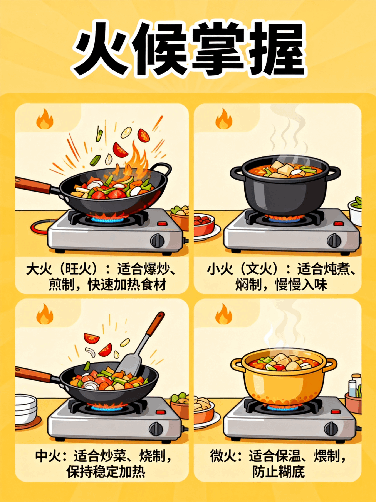
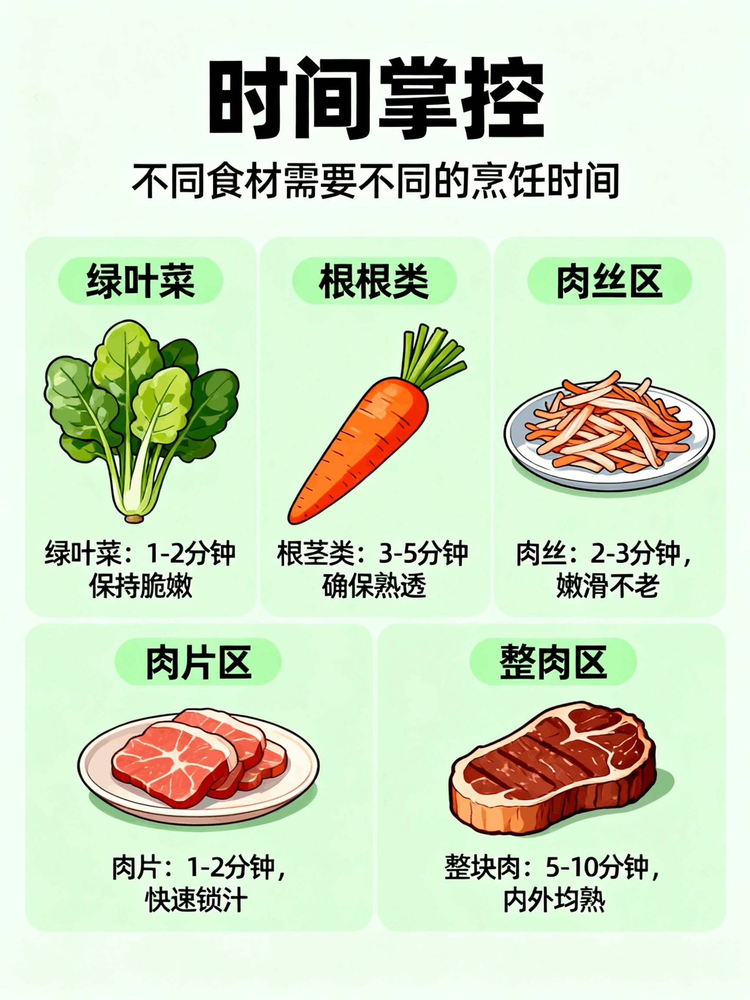
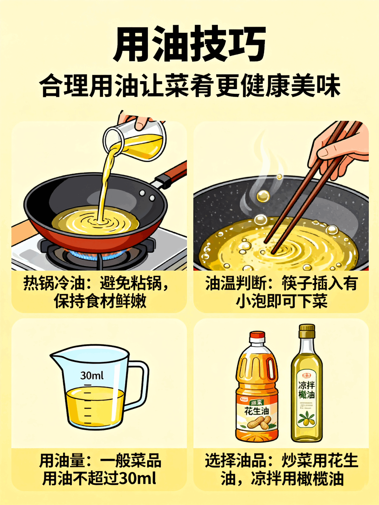
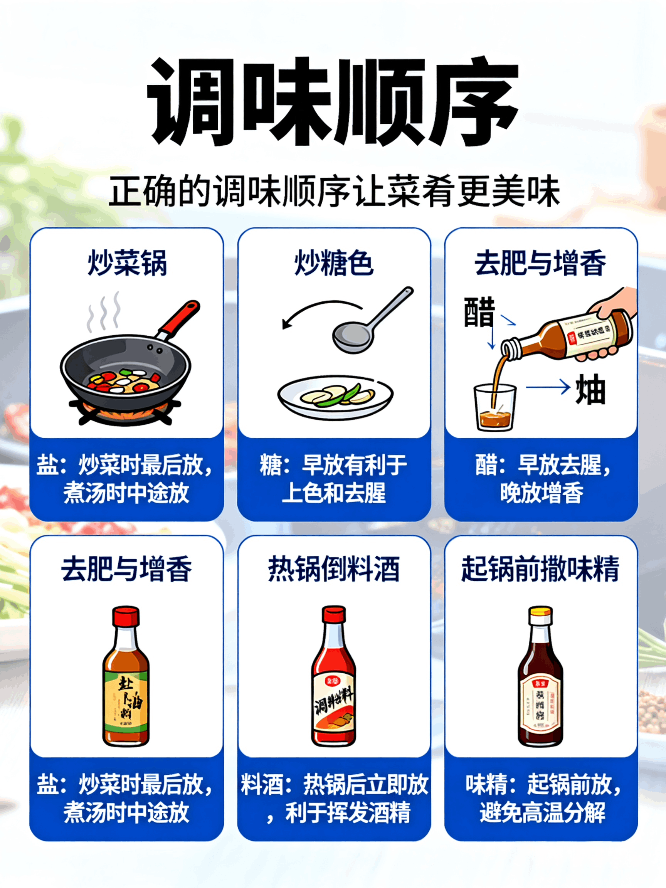

烹饪基础指南
掌握烹饪的核心技巧，从火候控制到调味艺术，让每一道菜都充满专业的味道

🔥 火候掌握
大火爆炒 - 蔬菜脆嫩，锁汁出香
中火焖煮 - 入味均匀，外酥内嫩
小火慢炖 - 汤清不糊，温和营养
再次点击返回

⏰ 时间掌控
1-3分钟 - 绿叶菜，海鲜类
5-15分钟 - 肉类，根茎类
30分钟+ - 炖汤，红烧菜
再次点击返回

🫒 用油技巧
3-4成热 - 慢炸坚果
5-6成热 - 炸肉菜类
7-8成热 - 爆炒过油
再次点击返回

🧂 调味顺序
盐 - 提升本味
糖 - 增加回甘
酱油 - 调色调味
香油 - 提香收尾
再次点击返回